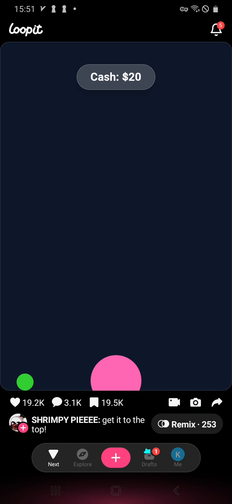
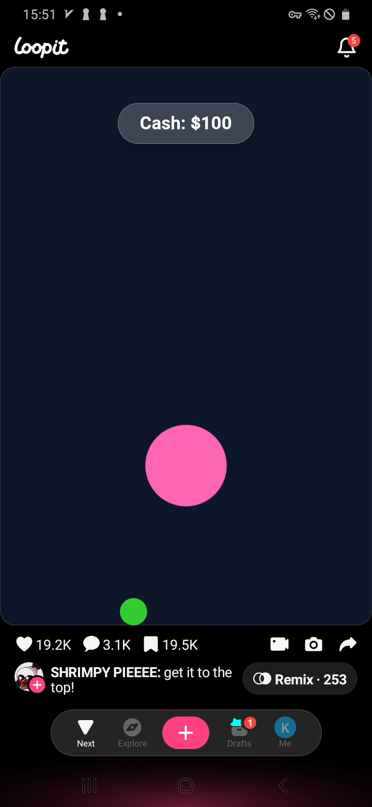
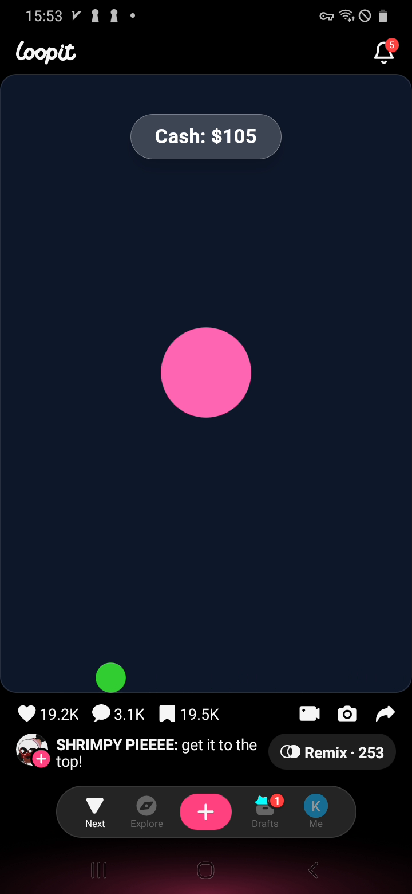
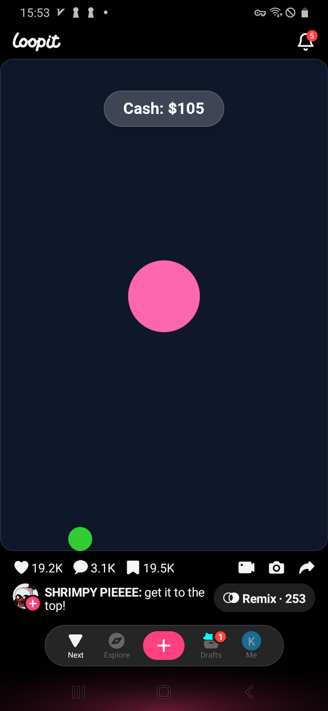

How to play
- Open the game in the Loopit app feed. The starting screen shows Cash: $0 and a green ball near the bottom edge.
- The game does not show a tutorial prompt, so treat it like a physics control game rather than a menu puzzle.
- Use swipes or taps near the lower green ball to influence the bottom controller position.
- A larger pink ball appears during play. Keeping the balls active raises the Cash counter in small increments.
- In our recorded run, Cash increased through $20, $70, $100, and $105 while the pink ball bounced around the lower and middle playfield.
- We did not verify a final win screen or a top reward, so the confirmed goal is improving cash and keeping the ball in motion.
Controls
- Start from the green ball area near the bottom of the game field.
- Use short horizontal swipes or taps near the bottom to reposition the green controller.
- Avoid long uncontrolled swipes toward the system navigation area; they can move your input away from the game field.
- Watch the pink ball's path and adjust the green ball before it drops too low.
- If the Cash number stops changing, re-center the green ball under the active play area and try smaller corrections.
Strategy tips
- Focus on staying under the pink ball instead of chasing the top immediately.
- Small left-right corrections are more reliable than one huge upward fling, because the green controller mostly stays near the bottom.
- Use the Cash counter as feedback. If it goes up by $5 or $10, the interaction is working.
- When the pink ball drifts to one side, move the green ball toward that side before it reaches the bottom.
- Keep the playfield visible; do not cover the bottom edge with your finger for too long.
- Because the final top reward was not verified, treat this guide as a cash-building and control guide rather than a guaranteed completion route.
Common mistakes
- Expecting a clear tutorial prompt; this game starts without one.
- Only swiping straight up and ignoring where the pink ball is falling.
- Moving the green controller too far to one edge and leaving the middle uncovered.
- Assuming Cash $100 is a final win state. It is a progress score, not a confirmed completion screen.
- Writing a fake top route without seeing the top reward.
Walkthrough screenshots





Loopit Get It to the Top FAQ
How do you control Loopit Get It to the Top?
Use short swipes or taps near the green ball at the bottom. It behaves like a bottom controller for the active playfield.
What is the pink ball?
In our playthrough, the larger pink ball appeared after interaction started and its movement was tied to Cash growth.
How do you earn cash?
Keep the ball interaction going. We saw Cash rise in small steps from $0 to $105 while the pink ball bounced in the field.
Did you reach the very top?
Not yet. We verified the controls and Cash growth, but did not verify a final top-of-screen reward or completion overlay.
What is the safest beginner strategy?
Keep the green ball near the bottom center and make small side corrections toward the falling pink ball instead of using huge upward swipes.


Player notes
Player comments